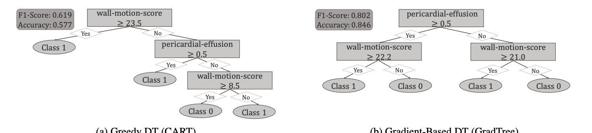
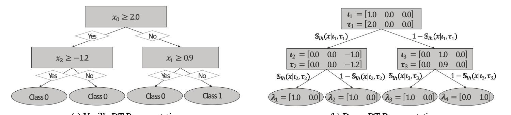

- 二値分類の MRR 0.75822 の二値分類データでの平均逆順位（macro F1 の順位から計算）。CART は 0.556、最適な木の DL8.5 は 0.335。GradTree は 13 データで最良だった（論文 Table 1）。
- 学習とテストの差 0.051二値分類での macro F1 の学習とテストの差の平均。CART は 0.183、DL8.5 は 0.202 で、GradTree のほうが過学習が小さかった（論文 Table 3）。
- 硬く、軸に平行な分岐学習中も予測時も、各分岐は 1 つの特徴量としきい値で決まる。密な表現はいつでも通常の決定木に変換できる。
貪欲法は局所的な分岐しか選べず、勾配法で決定木を学ぶ既存の方法の多くは分岐を確率的か斜めにしている
CART や C4.5 は各ノードで不純度を局所的に最小にするので、探索の範囲が狭く、精度の低い木になることがある。論文の例では、心エコーのデータ（Echocardiogram）で、CART は局所的に最適な wall-motion-score で最初に分けるのに対し、GradTree は pericardial-effusion で分けてから wall-motion-score を別々のしきい値で使い、macro F1 は図中の値で 0.619 と 0.802 だった（図1）。

最適な決定木（混合整数最適化、分枝限定法、MurTree の動的計画法など）は大域的な最適解を探すが、多くは二値の特徴量を前提とし、連続の特徴量を離散化する必要があり、情報を失うことがある。勾配法で学ぶ方法には、柔らかい分岐を使う階層的な専門家の混合のほか、Norouzi ら（2015）の上界の最小化や Zantedeschi ら（2021）の argmin 微分のように硬い分岐を扱えるものもある。ただし論文によれば、これらは斜めの分岐に限られるか、微分できる分岐の関数を必要とする。GradTree は硬く、各分岐で 1 つの特徴量しか使わない木を勾配法で学ぶ。論文は、人は 3 次元を超える説明を一度に理解できないという Molnar の議論を引き、分岐ごとの解釈のしやすさを重視している。
決定木を和と積だけの式で書くと、学習を妨げるのは特徴量の選択・階段関数の分岐・葉のクラスの 3 つの離散な部分になる
深さ \(d\) の完全二分木は内部ノードごとのしきい値 \(\tau\) と特徴量の番号 \(\iota\)、葉ごとのクラス \(\lambda\) をパラメータにもつ。データ \(\boldsymbol x\) が葉 \(l\) に着くかどうかを表す \(\mathbb L\) を、経路上の分岐関数の積で書くと、木は葉の値の重みつき和になる。
勾配法を使うには 3 つの障害がある。特徴量の番号 \(\iota\) は自然数で連続でない（C1）。分岐関数はヘヴィサイドの階段関数で、勾配は 0 か定義されない（C2）。葉のクラス \(\lambda\) も連続でない（C3）。経路上のノードの番号や左右の向きも離散だが、完全二分木を前提にすれば最適化の前に計算しておける。
特徴量の選択としきい値を密な行列で表し、丸めの前後で順方向と逆方向を分ける straight-through 推定で勾配を通す
密な表現：内部ノードごとに、特徴量の番号を長さ \(n\)（特徴量の数）の one-hot ベクトル \(\boldsymbol\iota\) で表し、しきい値も特徴量ごとに別の値をもつベクトル \(\boldsymbol\tau\) にする（図2）。しきい値は特徴量ごとに意味が違うので、ある特徴量に合うしきい値が別の特徴量でも使えるとは限らない。特徴量ごとに値を覚えておくことで、学習中に分岐に使う特徴量を探しやすくなる。分岐関数はロジスティック関数 \(S\) を丸めた形に書き直せる。\(\boldsymbol\iota\) が one-hot なら、これは元の階段関数と一致する。

= 2.0, x2 >= -1.2 and x1 >= 0.9 and leaves Class 0, 0, 0, 1. Right: the same tree in the dense representation, where each internal node stores a one-hot feature vector iota and a threshold vector tau over the three features, and each leaf stores a class vector lambda." loading="lazy">straight-through（ST）推定：順方向では各ノードの \(\boldsymbol\iota\) に hardmax をかけて one-hot にし、分岐の値を丸めて 0 か 1 にする。逆方向では hardmax と丸めを飛ばし、その前の値の勾配をそのまま流す（C1、C2）。順方向と逆方向のずれを小さくするため、hardmax の前に entmax 変換で \(\boldsymbol\iota\) をまばらな分布にしておく。丸める前にロジスティック関数を通すので、しきい値に近いデータほど勾配が小さくなり、しきい値からの距離も勾配に反映される。葉は各クラスの確率の分布をもたせ（C3）、交差エントロピーのような標準的な損失を使う。
学習：論文が新しく提案する経路の計算では、ミニバッチ全体の順方向の計算を 1 組の行列演算で行える。Adam と重みの平均化を使い、検証データの損失による早期終了と、悪い初期値を避けるためのランダムな再始動を行う。学習は完全二分木で行い、学習後に、データが 1 件も届かない枝を刈り込む。
22 の二値分類データで、GradTree の平均逆順位は 0.758 と最も高く、多クラスでは CART に次ぐ 2 番目だった
主に UCI のデータを使い、80% で学習して 20% でテストした（macro F1、10 回の平均）。比べたのは各系統の代表である CART（sklearn）、遺伝的アルゴリズムの GeneticTree、軸に平行で柔らかい分岐の DNDT（特徴量が 12 個以下のデータだけ）、最適な木の DL8.5（MurTree の改良を含む。連続の特徴量は 5 区間に離散化）である。ハイパーパラメータは交差検証つきのランダム探索で決めた。
| GradTree | DNDT | GeneticTree | DL8.5 | CART | |
|---|---|---|---|---|---|
| 二値分類の MRR ↑ | 0.758 | 0.370 | 0.365 | 0.335 | 0.556 |
| 二値分類の MRD ↓ | 0.008 | 0.056 | 0.211 | 0.084 | 0.035 |
| 多クラスの MRR ↑ | 0.619 | 0.383 | 0.288 | 0.315 | 0.774 |
| 多クラスの MRD ↓ | 0.069 | 0.188 | 0.521 | 0.215 | 0.040 |
| 木の大きさ（二値／多クラス） | 54／86 | 887／907 | 7／20 | 28／29 | 67／76 |
| 学習とテストの差（二値／多クラス） | 0.051／0.174 | 0.039／0.239 | 0.204／0.258 | 0.202／0.260 | 0.183／0.247 |
表1 macro F1 による平均逆順位（MRR）と最良の手法との平均相対差（MRD）、剪定後の木の大きさ、学習とテストの差（論文 Table 1〜3、AAAI 2024 版）。二値分類は 22 データ、多クラスは 14 データ。
二値分類では GradTree が 13 データで最良（CART は 6 データ）で、Echocardiogram、Heart Disease、Absenteeism などでは差が大きかった。多クラスでは、特徴量の少ないデータでは GradTree が良かったが、特徴量とクラスの多いデータでは CART が最良だった。論文は、密な表現ではノードごとのパラメータが特徴量の数に、葉ごとのパラメータがクラスの数に比例して増え、最適化が難しくなるためと説明し、パラメータの共有などで表現を改良することを今後の課題としている。
剪定後の木の大きさは二値分類では CART より小さく、多クラスでは CART よりわずかに大きかった。GeneticTree と DL8.5 の木はさらに小さいが、DL8.5 が小さいのは計算量のため深さ 4 までしか扱えないことによる。学習とテストの差で測った過学習は、二値分類で GradTree が CART、GeneticTree、DL8.5 よりかなり小さく、同じ勾配法の DNDT（0.039）はさらに小さかった。既定のハイパーパラメータでも、二値分類では GradTree の MRR が最も高かった。計算時間は CART がどのデータでも 1 秒未満と最も速く、GradTree は多くのデータで 30 秒未満（平均 35 秒）だった。DL8.5 は特徴量やデータが増えると遅くなり、Credit Card で約 300 秒、Landsat で 830 秒を超え、Splice では 60 分以内に解が見つからなかった。
アブレーションでは、entmax の直後に ST を使う設計が、ST Gumbel Softmax や、entmax を温度の焼きなましで徐々に one-hot にする方法（Chang ら）を上回った（既定のハイパーパラメータでの二値分類の平均 macro F1 は、それぞれ 0.764、0.560、0.757）。
軸に平行で硬い分岐の木を勾配法で同時に学ぶ方法で、大域的な最適解ではなく、汎化の良い局所解をねらう
- 何を最適にするか：深さ \(d\) の完全二分木の全ノードのしきい値・特徴量の選択と、葉のクラスの分布を、交差エントロピーで同時に学ぶ。論文は最適な決定木のように大域的な最適解を探すのではなく、ニューラルネットの最適化と同じく、テストデータへの汎化の良い局所解をねらうと明言している。貪欲法の局所解と違い、分岐を 1 つずつ順に決める制約はない。
- 分岐の形：学習中も予測時も、各分岐は 1 つの特徴量としきい値による硬い分岐で、同じ経路で同じ特徴量を別のしきい値で何度も使える。この点で、同じ勾配法の LatentTrees や Norouzi ら、確率的な分岐の ORCT のような斜めの分岐の木と異なる。
- 今後の課題：現在は学習後の単純な剪定を使っており、Zantedeschi らのように学習中に刈り込みを決める仕組みを入れることや、軸に平行で硬い木のアンサンブルを勾配法でまとめて学ぶことを挙げている。
@inproceedings{marton2024gradtree,
title = {{GradTree}: Learning Axis-Aligned Decision Trees with Gradient Descent},
author = {Marton, Sascha and L{\"u}dtke, Stefan and Bartelt, Christian and Stuckenschmidt, Heiner},
booktitle = {Proceedings of the AAAI Conference on Artificial Intelligence},
volume = {38},
number = {13},
pages = {14323--14331},
year = {2024},
doi = {10.1609/aaai.v38i13.29345}
}
ページの記述・数値・図は AAAI 2024 の出版版（AAAI のサイトの PDF）による。書誌情報は Crossref による。所属は出版版の表記。